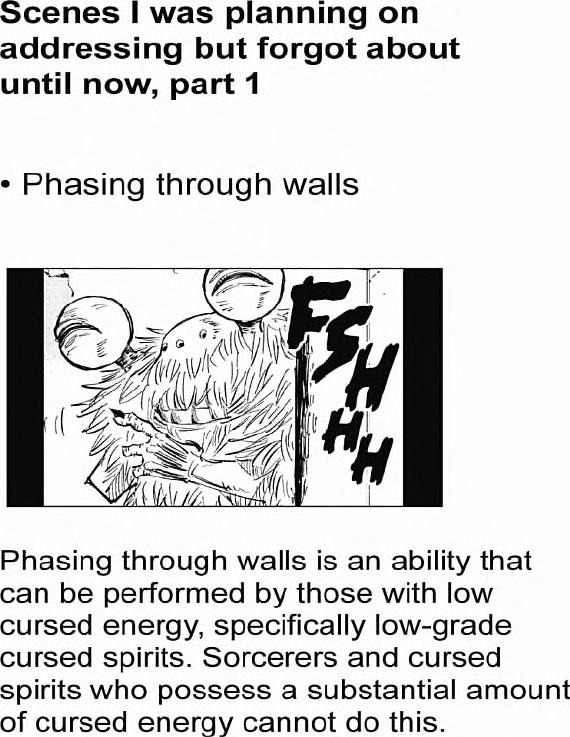

Scenes | was planning on addressing but forgot about until now, part 1
* Phasing through walls
FSHHH
A hairy character phases through a wall.
Phasing through walls is an ability that can be performed by those with low cursed energy, specifically low-grade cursed spirits. Sorcerers and cursed spirits who possess a substantial amount of cursed energy cannot do this.